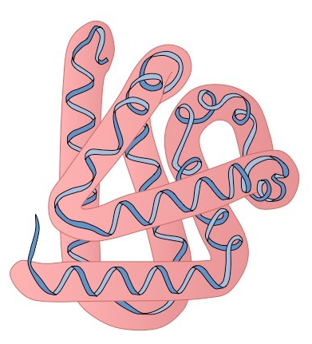

Importance of Proteins
Proteins, a highly complex substance that is present in all living organisms.
Introduction
A protein molecule is very large compared with molecules of sugar or salt and consists of many amino acids joined together to form long chains, much as beads are arranged on a string. There are about 20 different amino acids that occur naturally in proteins. Proteins of similar function have similar amino acid composition and sequence.
The protein content of animal organs is usually much higher than that of the blood plasma. Muscles, for example, contain about 30 percent protein, the liver 20 to 30 percent, and red blood cells 30 percent. Higher percentages of protein are found in hair, bones, and other organs and tissues with a low water content. The quantity of free amino acids and peptides in animals is much smaller than the amount of protein; protein molecules are produced in cells by the stepwise alignment of amino acids and are released into the body fluids only after synthesis is complete.
Classification of Proteins
- Fibrous Proteins: When the polypeptide chains run parallel and are held together by hydrogen and disulfide bonds, a fiber-like structure is formed. These proteins are generally insoluble in water. Examples include keratin (present in hair, wool, and silk) and myosin (present in muscles).
- Globular Proteins: This structure results when the chains of polypeptides coil around to give a spherical shape. These proteins are usually soluble in water. Examples include insulin and albumins.
Different Levels of Protein Structure
- Primary Structure: The exact sequence of amino acids in the polypeptide chain, determined by the genetic code. This structure is crucial for the protein's function.
- Secondary Structure: Local folded structures such as α-helix and β-pleated sheets, stabilized by hydrogen bonding.
- Tertiary Structure: The overall 3D shape of a protein, stabilized by various forces like hydrogen bonds and disulfide linkages.
- Quaternary Structure: The arrangement of multiple polypeptide chains into a functional protein complex.
Fibrous Proteins
Globular Proteins
Introduction to DNA
DNA, or deoxyribonucleic acid, is the hereditary material in humans and almost all other organisms. It carries the genetic instructions used in growth, development, functioning, and reproduction.
Study of DNA
The study of DNA has revolutionized biology and medicine. It enables researchers to explore genetic disorders, advance forensic science, and understand the evolutionary history of life on Earth.
Introduction to COVID-19
COVID-19, caused by the SARS-CoV-2 virus, is a global pandemic that has profoundly impacted public health, economies, and daily life worldwide. Understanding the virus is crucial for prevention and treatment.
Mutations
SARS-CoV-2 mutations have resulted in new variants with varying transmissibility and severity. Studying these mutations is essential for developing effective vaccines and treatments.